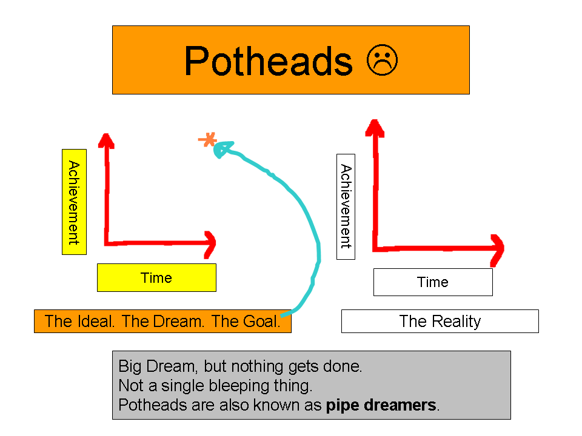
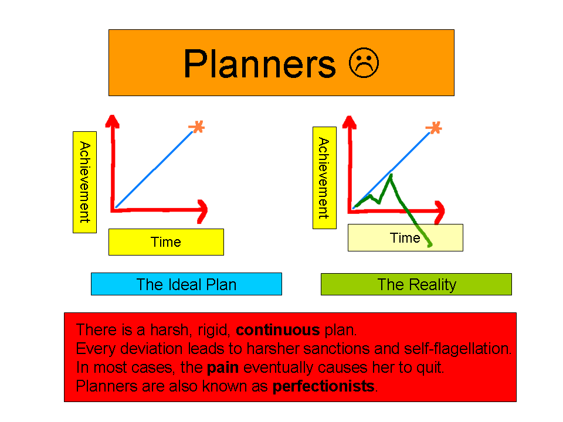
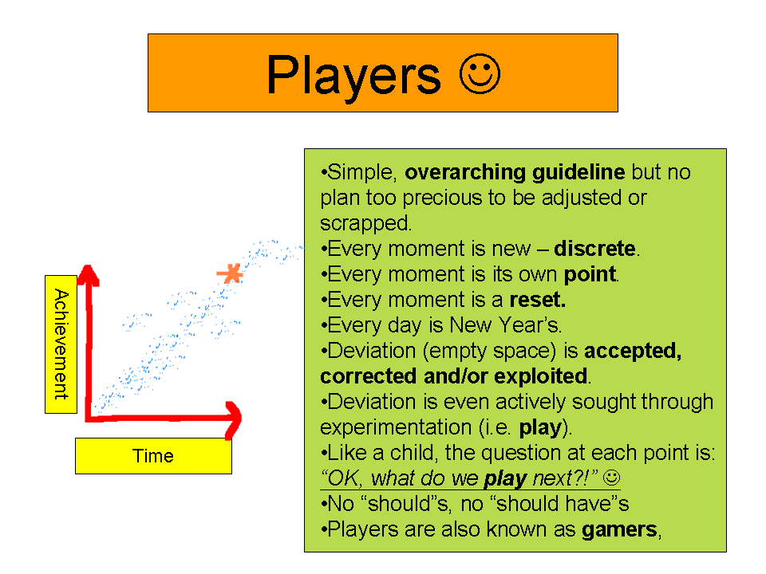
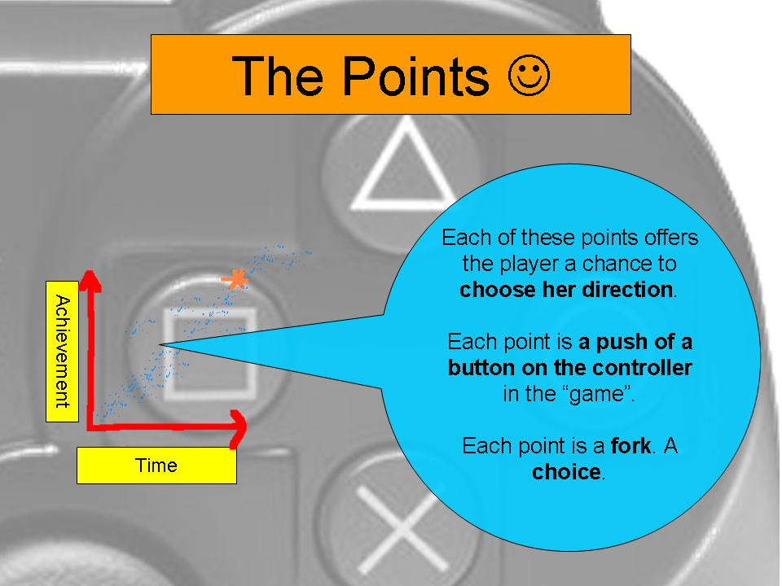

It’s New Year’s.
So freaking what? It’s just another day. We all need to calm down a little. Even me telling you to calm down is probably just fueling the excitement, isn’t it?
Are you going to make a resolution? Good luck with that. I doubt you’ll even remember it by early March.
Screw resolutions. I’m going to show you how to actually get things done.
And while we’re ranting: I hate my writing. I hate this whole website. I even hate people who hate my writing because they remind me of all the hate I already have. If this site were a piece of paper, I’d have burned it long ago. Fortunately, the blog medium has largely prevented these perfectionistic tendencies coming out and destroying whatever little good some of you may gain from reading this.
The reason I hate this mother is because it almost never comes out the way I’m thinking of it. There are these beautiful and rather tingly constructions in my mind and they come out so…bland. So tingleless.
In “The Fork, The Choice and You“, I was trying to write something that it might perhaps be better to draw. So I went ahead and drew it.
Behold! The following paths of achievement (or lack thereof): the pothead, the planner and the player.
The Pothead Model
“Hey, wouldn’t it be cool if…whoa…yeah”.
Problems: Single, discrete point — a fantasy, a dream — which is a good start, but no path, no granularity, no action, no nothing.

Big Dream, but nothing gets done. Not a single, bleeping thing. Potheads are also known as pipe dreamers.
The Planner Model
Problems: Has goal (point) and path (line), but the path lacks granularity and elasticity. It is conceptually beautiful and perfectly smooth, but unworkable except under perfect (i.e. rarely fulfilled) conditions. The planner’s inability to stay on the line is frequently a cause of stress, pain and ultimately failure.

There is a harsh, rigid, continuous plan. Every deviation from this plan leads to harder sanctions and self-flagellation. In most cases, the sheer physical and emotional plan causes the planner to quit altogether. Planners are also known as perfectionists.
At this time of year, society at large offers us the path of the planner. And those of us who take it tend to suffer so much that we fall off the graph. I submit to you that we should reject this model.
The Player Model
- The player has fun because it’s all a game.
- Unlike the planner, who has this perfect, smooth, continous line she’s trying to force herself onto, the player deals in tiny, discrete, individual points (AKA choices/forks). The player’s path is digital. Over time, she causes the points to form a trend, but there is no actual line.
- At every point, she makes a choice that is both fun and takes her closer to the goal.
- There are thousands of these points.
- The player has a goal but the focus is on the immediate next action.
- The player does not allow the goal to overwhelm her with its vertical or horizontal distance.
- The player does not allow “imperfections” and deviations to perturb her. She accepts deviations, and then corrects or even exploits them.
- The player may often actively seek new, advantageous deviations through playful experiments. She’s in it for the ride.

To repeat the text in the diagram (just in case):
- There is a simple, overarching guideline but no plan too precious to be adjusted or scrapped.
- No limits on modus operandi whatsoever (except to exclude the boring, the ineffective and the generally crap).
- Every moment is new — discrete, digital.
- Every moment is a reset.
- Every day is New Year’s.
- Every t is 0.
- Deviation is accepted, corrected and exploited.
- Beneficial deviation is even actively sought out through experimentation = play.
- Like a small child, the question at each point is “OK, what do we play next?!”.
- There are no “shoulds”, there are no “should haves”. Players are also known as gamers.
Beyond immediate necessity, the player forgets about both the past and the future. There is no burden of regret, no crushingly grand aspirations (there are grand aspirations, she just doesn’t let them get in the way). The real question is: Right here, right now, what do we do next? What do we play next? 1
Japanesewise the key is this: there are gaps. Gaps in your immersion. Gaps in your implementation. Gaps in…I dunno…your teeth? You may make mistakes, you may fall off the horse. Fine. Big deal. What matters is what you do next. Every moment is New Year’s. Every moment is a chance to reset. Every moment, pretend the entire world has just been recreated and redrawn from scratch.
It is a game. If you’re not having fun, it’s because you’re doing it wrong. Which is not to say that there’s only one right way — there isn’t. But if you’re bored, then the way you’re doing it clearly has problems. Make it fun. You will know when you’re having fun. Don’t, don’t, do not be anal retentive and start asking what “fun” is. You know what it is. And if you don’t, then you’re gone in a way far beyond my ability to help you 😉 . I officially refuse to define fun.
When you touch something hot, you feel pain: this is your body trying to save your hand from being hurt. Boredom is intellectual pain. Boredom is your body’s way of telling you to change the situation. Ignore it to your own detriment. If you try to just fight through the boredom, your brain is just going to puke it all up anyhow. Your brain is trying to help you out by telling you: “Hey!…Nothing’s getting remembered or learned right now”.
Be A Player: Poke Dots Into Reality. There Is No Line

As you read this website, I do not want you to follow my advice. I do not want you to take my advice. I want you to use my advice. You cannot be me, nor would you want to. You can be much better than that. Much better. You will be faced with situations that I never faced; you may have preferences that I do not. Follow my trend — I think I offer a good one — but pick your own points: there is no line.
[Case in point: my least favorite type of question is “how many kanji/sentences should I do per day”? As many as you pleasantly and consistently can. Stop asking to be commanded (ironically enough, if you were to stop asking to be commanded because of that last sentence, you would in fact be obeying a command…but anyhoo). Do what you want. Try a few “points” and see which ones work for you.]
The planner’s path is goal-focussed. Contemporary personal development literature is awash in goalism. It’s well-intentioned, but it’s not working. When’s the last time a goal got someone to stop smoking? You can goal it up up the wazoo and nothing will change. The goal part is trivial. You can make up a goal half-asleep. I think we already set goals naturally — whenever we want something, that’s a goal. And don’t give me this “a goal is a dream with a deadline” crap, because if it’s a cool enough goal, there’s probably no way you’re going to know enough about the domain to set a real final deadline, so now you’ll just be scaring yourself with images of death (deadline).
Timeframes, yes; timeboxing, yes; deadlines, no. What you really need is (1) a new identity which can produce (2) simple guidelines (I’d say one guideline is enough, three is the max — you have to be able to recall them instantly) for point-by-point behavior, “rules of engagement” if you will — the simple AJATT algorithm in “The Fork, The Choice and You” is a good example.
On the player’s path, each of those points/forks/choices is a chance to change the future — to alter reality itself in a small way. Be a player. I’m not saying “abandon all thought of goals” — never let ideology get in the way of something truly useful — but I am saying let it go; leave well enough alone; it’s not helping like you think it is. Stop massaging these great big “mission statements”; that crap is nothing but empty prose. Stop getting aroused, confused and intimidated by all these “goalistic rituals” that are taking over our society and start poking tiny, pin-sized holes into reality. No one fails for lack of a goal, only for a lack of dots. Dot, dot, dot, dot…………………………
Playing The Meta-Game of AJATT
A lot of what we call personal development was and is actually made for corporate and military training. Stephen Covey? David Allen? Those boys are just manual writers for corporate soldiers, especially ones at or aiming for the “colonel” level. And maybe stuff like that works in large armies and corporations, who struggle just to communicate intentions and keep everyone singing from the same songsheet. But individuals and tiny groups aren’t like that.
We don’t have the sheer man-hours to waste writing impressive plans that are just going to be thrown out anyhow. But we can be nimble. We can be ad hoc. We can be point-by-point. We may appear to have less and be less, but we end up using it far better and thus accomplishing more and becoming more. We — individuals and tiny groups — can fail more because failure is cheaper for us; we can correct and exploit any situation — failure or otherwise — almost instantly.
Have you ever seen those big, round magnifying mirrors that chicks use to do their make-up? You know, the kind that show all your skin’s pores and tiny blemishes and make you depressed to be alive — even if you’re a guy who thought he was decent-looking? I finally understand why women use foundation — it’s the only thing that makes looking at yourself in one of those things bearable. Anyway, a large organization is like one of those. A large organization is like a huge magnifying device. And since a large organization magnifies everything, it also magnifies screw-ups.
A large org can make 10 million good things, but if it makes a mistake, it now has 10 million c-r-a-p things! Result? Large orgs (schools, companies, etc.) are defensive — they don’t try to be good, and they definitely don’t try to have fun, they just try to not-screw-up, not-make-misakes, follow-the-manual. This means that a large org has to suppress both success and failure for its own safety and indeed for the safety of the world at large. We couldn’t well afford to have elephants tripping up all over the place. When 10 million Firestone tires blow up, we have a freaking problem. And a giggly little: “Whoops! Haha — I meant to do that!“, will not cut it.
All of which explains why big companies keep buying up little ones — the little ones are able to think and twist and spin and pivot and maneuver and act and react and fail and deviate and correct and exploit far better and far faster. A big company is just happy to be alive and walking straight. A big company has to kill its creativity, because creativity is all these messy points and a big company wants — needs — a perfect, straight line. When working at full scale, a big company cannot safely and continuously invent and refine cool processes, it can only execute them. Even the great Sony purchases more of its technology than meets the consumer eye, despite having 100,000 incredibly smart employees and dedicated R&D labs.
And that, my war-oriented friends, also explains why a regular army can essentially never win against guerilla tactics. The flexibility and speed of adaptation does not even compare. Guerilla tactics are why America has a President and not a Queen, why Mao came to rule China, why Vietnam is a single country, why I can live wherever I want in Kenya, why even Alexander the Great and Napoleon got royally pwned (in Afghanistan and Russia, respectively) and why an AJATTeer can absolutely d-e-s-t-r-o-y someone who depended on Japanese classes. Because even if the raw AJATT process weren’t better, the meta-process — make it fun, iterate lots, fail lots and tweak to win — is virtually indestructible.
This is also why school sucks for learning, because it kills your maneuverability in order to get you to follow someone else’s plan that’s easier to grade. Schools couldn’t give a pygmy shrew’s buttocks whether you learn or not; they’re just happy to be alive and walking straight. Schools just want you to look good, sit still and shut up so they can push you down the conveyor belt and yell out “next!”. They may not be intentionally callous, but they certainly end up being about as warm as Ann Coulter on a December evening in Minnesota (Minne-freaking-sota winters…oh my gosh…MOMMY, WHY DOES IT HURT MY LUNGS WHEN I BREATHE? And why do shrill, somewhat racist, slightly anti-Semitic women…turn me on? It’s like: “if you wanna get with me, Khatzumoto, you have to alter my fundamental beliefs about humanity! *Diagonal* *Finger* *Snap*!”). Good for the school. Not good for you.
So don’t treat AJATT like school and try to mold yourself to fit The PlanTM, because even AJATT will suck if you do it like that. Mold the plan to fit you as you go along. I didn’t make this so you could be a cog in the machine, I made it so that you would own the machine, use the machine, customize the machine. You don’t need a license, just open the box and fiddle with it. [I think we’ll see an explosion of learning and invention when more concrete and abstract “boxes” like this — creation, discovery and execution processes — are open for us to see. In that sense, and that sense alone, people’s questions about AJATT minutiae are legitimate, if not necessarily important.]
You know, I’m always amused that people are impressed that I learned Japanese without classes. I say, I want to meet the guy who did get fluent because of classes; that shiitake mushroom would impress me!!! If that guy writes a book or blook, listen to HIM! It never surprises me any more that people like Edison, the Wright Brothers and young William Kamkwamba had little or no formal education: it would surprise me if they did.
Anyway, that’s it. That’s the basic idea. Kinda. Sorta. It still doesn’t read the way it actually looks in my mind, but hopefully this all makes things a little clearer. I don’t know if what I’m saying applies that widely. But it applied for self-directed learning/acquisition/becoming Japanese. If you have any questions or insights, feel free to share them with the whole gang.
Notes:
- By the way, this idea of using time rather than being used by it is one suggested by Eckhart Tolle in his “The Power of Now”. Don’t be deterred by all the shady, New Agey, quasi-religious hype; between the covers is actually one of the best books about focus and concentration ever written. ↩
OMG!!! This is the GREATEST new year gift EVER!!! I LOVE this article!!!
Everyday is new years huh, never really thought of it that way. I think I’ll try to think this way from now on (don’t worry this is not a “new years” resolution, its just a thought, a really active thought).
Absolutely wonderful post, thanks! My handwriting sucks too, it’s like sometimes it looks nice and others atrocious. I have this feeling that it has to do with STRESS.
Thank you, thank you thank you for this post. I’m sick and tired of all of this new year crap. Every moment offers a possibility to start anew. I began AJATT during summer school when my senior year was about to start. I mean it’s okay if you want to start anew today but if you choose this day simply because of the pretty 1/1 on the calendar then good luck with that… whew my bad got kinda carried away there but keep up the good work katz. Keep these kids(including me) in line lol
AJATT needs just one resolution:
Keep on keepin’ on.
The rest takes care of itself, eh?
“Hey, wouldn’t it be cool if…whoa…yeah”.
This article is pretty sweet, I gotta admit.
I have been too lazy for too long. I haven’t done my kanji reviews and my SRS for weeks. I will make this year work out. The fact that the year passed by doesn’t mean anything. What matters to me is that everyday will be Japanese no matter what. I will be awesome. Even if I had to set the kanji meter back down to 0 I will do that and go up to 2,000 that way. This time I will be more consistent and for every single moment I will use it. This year might suck or be awesome but no matter what happens I will keep learning Japanese. What are you going to do for your future? It’s better to just have fun and flow with it. Well happy new years or 新年 or something you that I don’t really know.
Good post.
You know, I was going to start doing some SRS reps, but I changed my mind and now I will play Final Fantasy VIII in Japanese on the PSP.
That’s my choice.
…and this time I’m swear going to write down that damn 漢字 they keep using for cave「洞窟」I believe it is.
Nice article, I like, keep up the good work. Thanks Khatz
Thanks for this timely post – my “on a winter vacation, feeling grouchy about not getting much done and being where I want” self feels super すっきり now.
So don’t treat AJATT like school and try to mold yourself to fit The PlanTM, because even AJATT will suck if you do it like that.
The truth, this man speaks it.
You know, I had a really hard time when I tried to force myself to apply the “AJATT method” (sounds much more important and official than just “AJATT”) to my “studies” (sounds even more important). It eventually stopped being painful when I convinced myself that I don’t actually need to “study” anything (in part because I know I kick buttocks already) and decided to listen to some more cheesy Japanese 80s rock instead. Having fun is definitely where it’s at.
Here’s live street signs in japan. itsajapanesesign.blogspot.com/
I noticed that i could read most of these signs and understand them perfectly.
Good items to SRS people.
When it comes to new year resolutions, majority of the ones i’ve made in the past, well didn’t really happen at all lol. One should just go about doing there daily things without worrying much about there “main goal”. Because eventually doing the same process daily, will add up in the long run. And when you least expect it, you’ll hit the top and you’ll definitely be happy that you’ve reached the top.
Thanks for the cheers, khatzmoto-様? lol. I’ll be sure to keep them coming if I find anything of those sorts. Also I have one suggestion if i may? Keep updating the success stories if possible. Those are always the best motivational items that people want to hear always, no matter what stage there in. I’m in intermediate stage(Which is the most annoyest(not even a word I know lol) stage for any learner of a language). I’ll be sure to post mine’s on this site, when i get fluent!
Fdsfdaafsd: “I have been too lazy for too long. I haven’t done my kanji reviews and my SRS for weeks. I will make this year work out.”
I think the point is you *shouldn’t* aim to make this year work out — that’s big and hard. Just do a little something today.
I don’t know if anyone has read this yet, but it’s interesting reading this guy’s site
www.olispiels.com/what-it-takes-to-learn-japanese/
I liked how this guy wrote almost everything in his SRS anki reviews+kanji. I gotta start doing that nowadays!
Awww….I like your writing. It seems plenty full of viv and verve to me. 🙂
Anyway, from a recovering perfectionist–thanks for the reminder.
My only problem with this article is that you used a ps3 controller instead of an xbox one.
In all seriousness, this has really helped me get back on the horse, especially after having slipped on my SRS completely for the christmas period.
Keep it up Khatz!
“When you touch something hot, you feel pain: this is your body trying to save your hand from being hurt. Boredom is intellectual pain. Boredom is your body’s way of telling you to change the situation. Ignore it to your own detriment.”
That is a mighty healthy Quote. Tomorrow being my 誕生日. I been thinking more about how/ where i want my japanese journey to unfold…So I actually made a resolution to Learn as much Japanese AS I can and have as much fun and help others do the same. I think a plan is better than no plan. BUT I ALSO AGREE WITH EVERYDAY IS A NEW YEAR…
“Not everything that counts can be counted, and not everything that can be counted counts.” (Sign hanging in Einstein’s office at Princeton)
KEEP IT FUN! BECOME what you believe you can!!! Be the change you want !
THANKS KHATS!
p.s. your graphs are 醜い （＾＿＾）
Dude, don’t you DARE second-guess your writing. Every new entry is like an awesome present for me.
Everything we do comes out differently and poorly when you compare it to its conceptual, higher-realm ideal. But that’s the joy of being human, isn’t it? Anything that is actually written down and distributed is *infinitely* better than even the most sublime conception, which is nice to daydream about but which does no one any good if it’s not channeled into something.
Here’s my blog(Excuse my horrible grammar in the blogs. Ironically my grammar is bad, but i’ve always managed to get 70%+ in any English course lol)
Some of the posts are just of what i wrote on this blog site. Which contain bad grammer as well.
ta121.wordpress.com/
I’ll be sure to keep posting things weekly or in a few days. Gradually update+any advice(personal experience advice on kanji+sentences,etc,anything that can help people out)
Love the Ann Coulter comment, glad I’m not the only one that finds raving conservative lunatic chicks hot
I found a good way to keep my guidelines with me. First I was writing them down like most sources tell you to, but I noticed I didn’t really remember them that well and they weren’t flexible/clear enough. After thinking about it I realized a very simple solution; I’ve had my own “fantasy realm” for a long time, one of those places you make in your head so you can think of it when you need to relax, etc. I had put in some stuff that deals with basic principles like “help other people” and so on. Anyway, what I did was now I put in more concrete guidelines, for example how I prioritize my goals right now. First thing I did was in the “take care of time” section I put in a computer with a 9 on it, meaning I won’t use the computer past nine in the evening unless it’s especially important or if I’m over at a friend’s place.
It’s really helped me in making the constant choices, I always know what I want to do and it’s easy to weigh different results against each other. At the same time, I can mentally modify it all whenever I feel the need to.
Regarding resolutions, I got the exact same feeling at New Year’s when there was resolution talk going on. It’s just, if you only could see it how I see it you’d feel so helpless.
Actually, something I thought of regarding holidays in general; I’m happy when I want to. Christmas is special in many ways to me but I won’t claim that it’s “worth” more than any other days. It’s weird how most people let themselves be told that these days are extra important to their individual lives just because their culture happens to have been celebrating them for so long.
I’m looking forward to that post about audio in Canto SRS. I’ve been using example sentences from Sheik’s site, and I can’t imagine possibly learning Cantonese without them. Maybe Mandarin, maybe Japanese, but never Canto without human voices reading the sentences.
“So don’t treat AJATT like school and try to mold yourself to fit The Plan, because even AJATT will suck if you do it like that.”
This is so true, but I see so many people (albeit with good intentions) setting out an AJATT curriculum on sites such as the ‘reviewing the kanji’ forum.
I think it’s because people have this have this curriculum idea ingrained into their head with years of school- like you’ve said “no pain no gain” syndrome. For me, I use the idea “if it tastes bad, spit it out”.
I suppose it’s with anything though, get enough followers and the original text becomes the gospel, anyone that sways is a heathen sinner.
Keep up the great posts Khatz. You always have great points to make, it’s just that you’re your own worst critic lol.
Matt
@Khatzumoto: Not to detract from another great article, but your videogame analogy falls apart somewhat when faced with the massive organizational structures knows as “guilds” in massively multiplayer games. Video games can be used for good and evil alike, I guess.
@アメド: I don’t suppose there are any sites with pictures of Chinese signs, are there? Does anyone on here know of anything like that? I’d do it myself if I was still in a part of the world that has signs written in Chinese.
“At times our own light goes out and is rekindled by a spark from another person. Each of us has cause to think with deep gratitude of those who have lighted the flame within us” — Albert Schweitzer
You’re a good deal Kat. You rendered ‘optimal load’ better than I. It’s simply contact, “points”. It’s not about getting it done, it’s about fillin’ in the graph. If you plow the field, seed the field, harvest the field, prosper because of the field and no one but you can say “stop”…you own the field.
What you say does have wide use. Kick out the chocks brother and act like you own the place…please.
Making the activity based around contact and enthusiasm does more ‘work’ than any human activity. And frees up the mind to do more. The contact doesn’t have to be physical. Every event generates a wave. Multiple waves from different points always have a center. That center is imploded through and everything twists around it. The virtual implosion force passes through the center + the twist and “inspires” more events. More contacts build more diverse resonance and expand the unity of the field. More things can grow. There is more being added into everything being grown. Quality and quantity don’t exist before contact. It’s just contacts, points. If you’re inspired you got it, if not, well go get it.
I have to argue about potheads, look up a guy named Terence Mckenna, he´s a scientist, very successful one, a genius imo. He did do very much to achieve his dreams and invented astonishing theories. It seems that potheads do things that they see a reason in doing, I cant imagine a pothead happily joining the army or something:D
Although I agree It is might be hard to bring a better example of people who don´t act.
I love reading your writing. And I’m not even trying to learn Japanese. I just stumbled over here from a link on fluentin3months.com. Keep it up!
Hey, is it alright if I use one of your images if I give you full credit on my website? ^-^
This is my 2nd time i’ve read this article and i got gems that i think i missed during the 1st. Coz now, im more lazy than before and this article made me think that what im doing is much more better than those of military, schools, orgs whatever.
I wanna meet khatz someday to tell and show him how successful player I am. Ψ(｀∀´)Ψｹｹｹ
It’ s not new and possibly redundant but it neatly summarizes everything this blog is about, as I see it. Here you go : www.ted.com/talks/steve_keil_a_manifesto_for_play_for_bulgaria_and_beyond.html
Heyo, I’m currently learning german but i found the site interesting, i feel compelled to post a reply.
This is very wrong. It’s an half assed thought wrote down with silly pictures.
A planner plans and does, a planner that acts like you described is not a planner.
Take rpgs for exemple, a planner already knows exactly what he will do from minute 1, a player will make an half assed character for fun and the pothead will just fuck around.
A planner music student already knows how scales work, what to learn and in which order, a “player” will just do whatever comes to his mind or suggested by his surroundings and be mediocre, a pothead will try to be edgy and fail.
This applies to everything, in fact i think that you ARE a planner that needs to view himself as a PLAYER to be motivated and actually work, am i wrong?
Ok, if you are planning on learning a language, what are the chances you will stick to these plans all the time, 100%?
Let’s say you will add 50 sentences to anki everyday, You can keep up with it for a while, but I guarantee that you won’t always be able to keep up with it forever. What if one day you just don’t feel like adding so many, what If you just wanna watch some ポケモン, or maybe you wanna play some FF3 on your ファミコン, or maybe you just wanna screw around on ニコニコ動画, and that day you only manage to enter 20. With being a player, you say that you will enter sentences to Anki everyday, no matter how little or how much, you will. There are almost no commitments to keep, unlike having to add those 50 sentences a day because in your plans you calculated you’d be fluent in x months.
Excellent article, all to often so much work goes into making spreadsheets and detailed flow charts of how to work, there’s precious little time to actually do the massive task ahead with language learning (and other things).
I’m also relieved in a weird way to know anyone is a little turned on by shrill slightly women with idiotic political ideas (no that isn’t a sarcastic statement). As much as they annoy me, I think if more of them were, erm, closer, to those of us on the other side, they might drop some of their 1623-esque ideas. Also, these people will always probably be a bit shrill and I want everyone to be someone’s turn on despite that. Personally, I love a woman with a good scowl, even though it has unsurprisingly led to some relationships with less than happy people.
Hey Katz! Thanks for the great post!
I used to be a full out Planner, but now I’m just a Player who occasionally takes part in Planner activities. What do you think of Mnemonics, the Art of Memory and such? Surely, being able to quickly memorize large amounts of info is useful for language learning– to an extent.
When in Planner mode, I did some pretty crazy things: like making a bet with all of my peers that if I could memorize a list of 500 (Hiragana and meaning) in 5 days with only 5% margin error, they each would owe me a beer. And if I couldn’t, they could decide the punishment- whatever it may be. Scary… knowing my friends.
So, I verb-binged like a crazed planner for 5 days and sure enough, I won and got very very drunk. And probably killed some of those new brain cells.
I haven’t looked at those lists of verbs since then. Here are the results of such Memorization Binging with little follow-up:
Recognition: Extremely high. If you see or hear the verb somewhere, in all likelihood you will recognize it and know what it means. Which is awesome.
Use: Fairly low. Since the Mnemonic trick I used binds the verb and meaning to a place (THE JOURNEY METHOD. ANYONE CAN LEARN AND USE THIS. IT ALLOWS PEOPLE TO MEMORIZE LONG TEXTS MUCH FASTER THAN ROTE MEMORIZATION… CHECK IT OUT: www.mindtools.com/pages/article/newTIM_05.htm), it’s very difficult for me to just pull out the verb from my mind, I need to remember the place. Which is weird when you’re trying to talk in Japanese. So pulling the correct verb out of 500 is difficult if not impossible, but once it is said by someone else (recognition here), the brain goes like “aaaahhh yeah.” and then for some reason it becomes much more ready for later use. I’m sure the ones that I use will be remembered and the least useful ones will f a d e a w a a ay…
A sense of being Awesome: show off. Respect from peers. Nerd Jealousy. Although players feel kickass every day because they are players, it’s also nice to feel kickass because your really did just kick ass.
But you couldn’t do intense goals like this every week, once a month (or two month… geez). It’s more about seeing how much you can put through the meat grinder. XD
So as for long term learning… Players rock… but if a player ever wanted to put on rocket powered rollerskates for a few days it won’t hurt them, as long as the goal is concrete has a fast deadline and the Planner reverts back to Player right after. And to be honest, such intense goals make you realize: Damn, this is really hard. I can’t learn everything this way. There’s got to be a better way than this. And yeah, it’s being a player.
Sorry for the long comment. But I really like this article, and believe pacing and the rare well-timed full sprint is great for language learning.
I notice that sometimes when I think of studying Chinese
my mental thought process is, “it’s so predictable now, I simply
keep learning 10/day and in under a year I’ll learn 3000 hanzi.”
This predictability leads me to think, “wow, if it’s so easy is it
really a goal worth achieving?” cause the feeling I’ll get is like
the language has lost it’s mystique. It’s like I’ve already learned
it.
However, when I hear Chinese people talking, or see Chinese writing,
all I can think is, I should be able to do that. I’v been learning
of and on for almost 2 years. I could be able to do that already.
I wish I could be talking with them or reading that writing and
just being apart of that environment. I wish I could interact with
the Chinese environment.
In other words, I start to feel like I’ve already conquered the
language way before I actually have simply because I’ve figured
out a really efficient path to getting there. This is a bit
demotivating because I feel like I’ve achieved the goal. However
I haven’t achieved the goal and this becomes apparent when I
am faced with the I.R.L. language I am faced with the truth of
my progress.
So what is happening is along the way, my reason for studying
changes from being able to use it, to knowing how to learn it.
A pseudo goal that I adopted in order to find the most efficient
path to goal achievement. Then I figure out how to learn it, test
my theory for a few months and when I see progress I have reached
the psuedo goal and get bored and want to quit. Then I quit and
some time down the road the real goal smacks me in the face again
when I bump into Chinese people speaking Chinese.
So the thing I take away from this what I also read on another
forum type site is that the desire to learn a language , at least
for some people like planner types maybe, isn’t constant. However the
fact that you would enjoy being fluent in the language could very well
be constant and so in some cases you have to just get in to a routine
so that even if you lose that drive at a certain point like half
way through RTK, you can just slog through. Making it routine
is important, and limiting other interests at the same time so you
don’t develop another obsession and have to strain to do the reps.
Having to fight the urge of something else to do the reps is what
makes someone hate reps imo.
When i read what you said about plans, i got skeptical. I was not understanding what was really wrong about having a plan.
***************
*Disclaimer: i think i ended up making a discussion with myself and digressed from the subject. It goes probably into too many directions. Sorry. But i enjoyed it :p.
***************
I think it comes from an ambiguity on the definition of a “plan”. And also in the idea that i don’t think that all plans are bad. Some are just wrongly done.
After all, you could say that the AJATT is a plan made of “rules” for you to learn japanese: you should be completely immersed, have all these repetitions of small winnable tasks on a daily basis, etc.
I feel that what you despise in the planner idea is more the “rigid” and too “prophetic” plan:
“a locked serie of expectations/outcomes/milestones that you set in a too approximately (and abstract) timed course of events”.
It basically multiplies “dreamt outcomes” by “dreamt planning in which they will be accomplished” which can only lead to a fantastic awaken and real frustration plan.
My 2 cent is just that there are bad and good plans (which are also the result of having good or bad goals. And we should also make a distinction between a goal and an objective).
Consider these 4 goals:
*I want to draw characters
*I want to become a great character artist
*I want to live of character design
*I want to draw anatomically correct characters
The 4 plans that you need to put into place are radically different, even though the object (drawing characters) is the same.
*in the first one, you fulfill your goal as soon as you take a pencil and start drawing stuff
*in the 3 others, your success relies on a combination of many parameter that are impossible to fulfill in a second. You have to buildup a strategy to get to it. Worse, the 2 and 3 are relying on external factors that are not entirely controllable only by yourself.
*You can create various plans for the 4th goal. Not all of them will fit you and you have to find a path (plan?) that you will find nice, interesting and fitting to your state of mind.
When i was in art school, we had these fuck*** drawing classes where we would look at these skeletons and try at once to draw them with the highest precision ever. One millimeter off and it was a wrong bad drawing. Welcome to the academic method. Then i bought a 100$ DVD course where a guy would give you 1 million proportion ratios to apply to make a “right” human body. Painful. Boring. Silly. It was the right path to vomit for me. After that i basically quit drawing out of total frustration.
It is only some months ago that i went back to it (after a 6 year stop), and this time i made my own plan. I would first try to understand the rough idea with completely unprecise chubby drawings, but that would allow me to get how things are working. Then i would just experiment with that for a while, having fun with these crazy drawings.
The second part of the plan would be to try to make funny poses with these potato drawings, even try to put them in a believable perspective. The goal was just to have fun and not to put coercitive rules in the success of my endeavour.
Then i would try to make a study of a tiny element that i could really be in control of. An eye for example. And i played with eyes A LOT. Trying to make tons of them, trying to create different expressions with them and so on.
To go back to our discussion, i feel that it should be all about
Having a doable goal that you like and which’s parameter are in your total reach
That you can start to work on NOW
Figure out a plan/strategy/scheme/rule/ that looks fun to you in all point
START TO MAKE THAT ###T NOW.
In the end, i don’t know what was the start of all that. I am just happy. And i love you all.
Yoann
I have a definition of FUN for you. 😉
Fundamental Universal Nature!